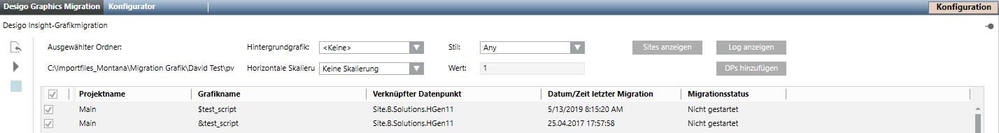
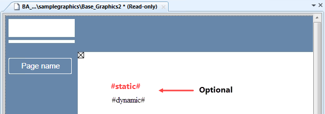

Migrate Graphics
- Select Project > System settings > Conversion tools > Desigo Graphics Migration.
- Select the Desigo Graphics Migration tab.
- Click Select Desigo Graphics
 and select the folder with the graphics for import.
and select the folder with the graphics for import.
Select the higher-level folder if it references graphics in a subordinate folder.
To display graphics that start with an underscore or exclamation point (for example, Super-Genies), press CTRL while clicking Select Desigo Graphics. - This displays a list of graphic pages that are sorted alphabetically (first by project, then by name).
- Select the graphics pages for import. A preview of the Desigo Insight graphic displays when you move the cursor over the graphic name.
- (Optional) Select a base graphic. The base graphic must be the same size as the graphic pages used in step 7 for generation.

The background image is applied to all graphics for migration. If static and dynamic text labels are defined, they overwrite the Desigo Insight formatting properties of all the texts. The text labels are no longer available after generation.
- Selects a style in the Style drop-down list. A symbol with various styles can have different offsets.
- In the Horizontal scaling drop-down list, select Scaling (see Reference):
- No scaling (is created using the size in Desigo Insight)
- Default scaling (is created in the size for Desigo CC using a factor of 1.35)
- Go to Scaling value and enter factor in the Value field (using factors ranging from 0.2 to 5)
NOTE:
- Drawn rectangles are not scaled and must be processed after the fact.
- The scaling factor is applied as well to the PNG floor plan images. This may distort the image. - Click Display sites.
- The Mapping Sites to Networks dialog box opens and displays all sites found in the XML files.
- Select a network from the Network column to map it to a site or select the Ignore mapping check box to continue migration without mapping because, for example, you plan on creating the networks at a later date.
- Click OK.
- Link a graphic to a data point (for additional information on associated data points, see Migrate graphics, section Associated Data Point). The linked data point prevents switching to the Application View when selecting the corresponding data point in System Browser.
Manual assignment:
a. Select the Manual Navigation check box.
b. In the System Browser, select Logical View.
c. Drag the data point from the Logical View to the Associated Data Point for the graphic.
Automatic assignment:
a. Click Add DPs.
b. In the Level text field, enter the link depth in the Logical View, for example 4.
c. Click OK.
d. Change or delete (right-click column Associated Data Point) the incorrect assignment.
NOTE: All changes are lost when regenerated. - Click Migrate
 .
.
NOTE: Click Show Sites, if the error messageNot all sites could…is displayed, to assign the sites to the corresponding Desigo CC networks. - In the Application View, a folder is created with the migrated graphics pages under Applications > Graphics.
The graphics pages have the same name as in Desigo Insight. The following characters are replaced by an underscore: „.“, „;“, „?“, „*“, „-“, „&“, „%“, „$“, „ “. A pre-existing graphics page, i.e. not created as part of the migration, has a suffix appended to the graphics page name with the syntax _1, _2, and so on. A graphics page is overwritten if already created during migration. - Double-click a line to open and edit a migrated graphic in the Graphics editor.